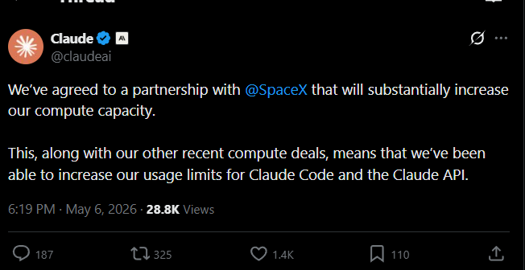
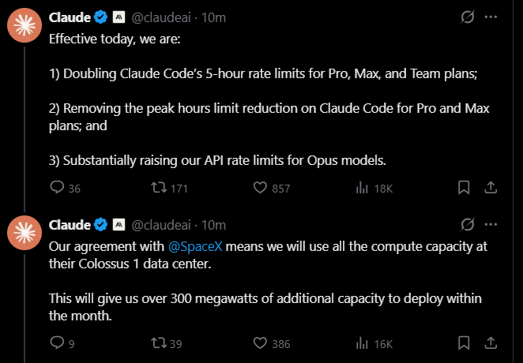

Anthropic · May 6, 2026
Claude Code 5-hour limits just
DOUBLED
Effective today · SpaceX deal
x.com/claudeai · partnership announcement

x.com/claudeai · effective today thread

The compute
All of SpaceX's Colossus 1 data center.
300
MEGAWATTS
new capacity
220K
NVIDIA GPUs
deploying soon
Effective today
3 things changed.
01
Claude Code 5-hour limits
2× FOR PRO · MAX · TEAM · ENTERPRISE
02
Peak hours reduction
REMOVED FOR PRO AND MAX
03
Opus API rate limits
RAISED CONSIDERABLY
Read the full announcement
anthropic.com/news/higher-limits-spacex
Subscribe→